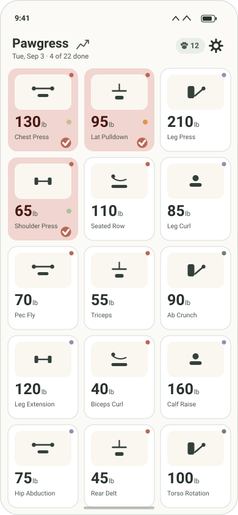
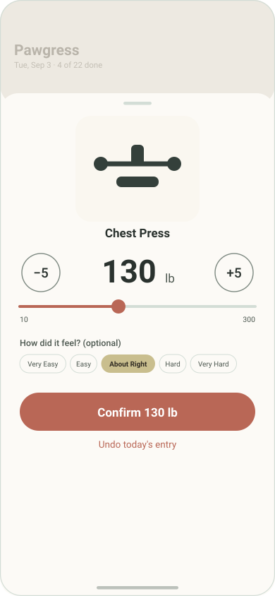
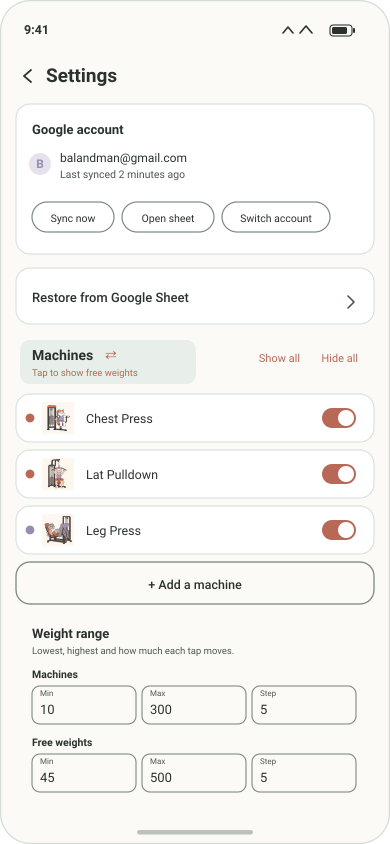
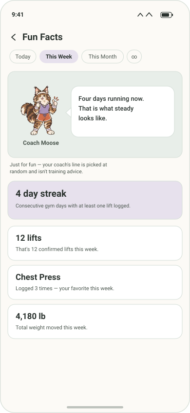
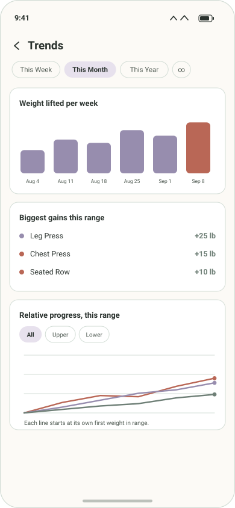
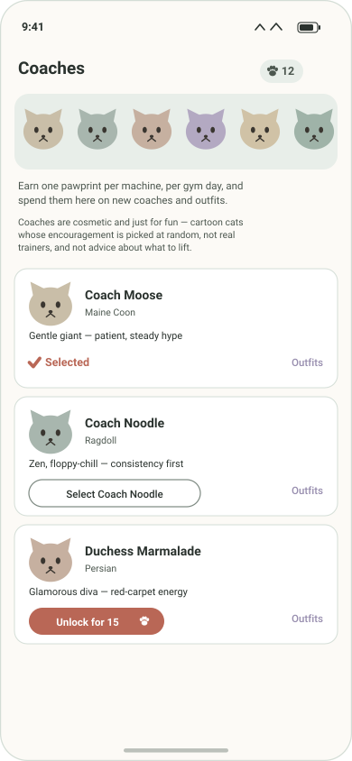

For Pawgress 1.0 · last updated September 3, 2026
Pawgress answers one question quickly: how much did I lift on this machine last time? Everything below explains how to do that, and what the rest of the app does once you want more than the number.

This is the screen you'll spend nearly all your time on. Each tile is one machine, showing its artwork, the last weight you lifted on it, and its name. The weight is deliberately large — it needs to be readable at arm's length while you're standing at the machine.
Under the Pawgress title is today's date and your progress, like 4 of 22 done. Tiles you've already logged today turn a filled terracotta with a checkmark, so a glance tells you what's left in your circuit.
| Tap this | To get |
|---|---|
| The word Pawgress | Fun Facts — your stats and your coach |
| The small graph icon | Trends — charts of your progress |
| The paw and number | Coaches — spend pawprints |
| The gear | Settings |
Machines are grouped by body area — upper body first, then core, then lower, then everything else — but they're laid out as one plain grid so an area with an odd number of machines never leaves a gap.

Tap any tile and a sheet slides up with last time's weight already dialed in. If nothing changed — which is most days — the big button at the bottom already says Confirm 130 lb, and you're done in one tap.
If today is different, three ways to change the number:
The range is 10–300 lb in 5 lb steps, and the button label changes to Log 135 lb once the number differs from last time, so you always know whether you're repeating or changing.
Five pills — Very Easy, Easy, About Right, Hard, Very Hard — let you record how the set felt. It's entirely optional; tap the selected pill again to clear it. Whatever you pick shows up later as a small colored dot on the tile and travels to your spreadsheet.
Tap a completed tile again to change the weight, or use Undo today's entry to remove it entirely. If the entry had already synced, the stale row is removed from your spreadsheet rather than left sitting next to the corrected one.
Two different dots appear on a tile, and they mean different things.
Top-right of each tile, telling you which part of the body it works:
The same colors appear in Settings and in the Trends breakdown, so a color means the same thing everywhere in the app.
Only shows if you recorded a difficulty for your last set:
Pawgress's day runs 4am to 4am, not midnight to midnight. A session that runs past midnight still counts as that evening's workout, and nothing flips over underneath you mid-workout.
At 4am every tile goes back to its un-done state, ready for the next session, and the weights stay exactly where you left them. Rest days simply pass untouched — there's nothing to dismiss and nothing to skip.

Pawgress ships with 39 machines and 32 free-weight exercises — squats, deadlifts, presses, rows, carries and core work — each with its own illustration. Only a starting circuit of machines is visible at first; everything else, including all the free-weight exercises, ships switched off. Settings (the gear icon) is where you make the grid look like your actual routine.
Because that's two long lists, the All / Machines / Free weights filter at the top of the machine list narrows it to one kind at a time, which makes finding a given exercise much quicker. It's a lens on the list only — Show all and Hide all still act on everything, not just what the filter is currently showing.
Show all and Hide all at the top of the list are the fast way to start from everything or from nothing and work toward your circuit.

Tap the word Pawgress at the top of the grid. The chips across the top — Today, This Week, This Month, and ∞ for all time — change the window every card below is measured over.
You'll see:

The small graph icon beside the title opens Trends. As on Fun Facts, the chips set the window: This Week, This Month, This Year, or ∞.
A bar per day, week, or month depending on the range you picked — the quickest read on whether you've been showing up.
Which machines went up the most over the window, largest first, each with its body-area dot.
Several machines on one chart. Each line is rebased to its own starting weight in the range, so a leg press at 200 lb and a biceps curl at 40 lb can be compared on the same axis — you're seeing change, not absolute load. Use the All ▸ body area ▸ machine chips to narrow it down.
Everything on this screen counts only machines currently visible in your grid, so hidden machines don't quietly skew the totals.

You earn one pawprint the first time you log a given machine on a given gym day. Logging the same machine again later that day doesn't earn more, and undoing an entry refunds the pawprint. Your balance sits in the top bar; tapping it opens this screen.
There are 20 coaches. The first is free; the rest cost 10, 15, 20 and so on up to 100 pawprints. Once unlocked, tap Select to make one yours — that's the coach who appears on Fun Facts.
Each coach has seasonal outfits at 15 pawprints apiece, bought and equipped per coach. They're time-gated — available only during their real-world window, like Halloween through October, or Summer Shades from June to August. Outside its window a coach quietly returns to their normal look and your choice reappears next year with nothing to re-select. Switching back to the base look is always free.
Optional, and off until you turn it on. Pawgress works completely offline; sync is a mirror of your data, never the source of truth.
In Settings, tap Sign in with Google and choose an account. Pawgress creates a spreadsheet called Pawgress in your own Google Drive and adds a row per lift:
Date | Time | Exercise | Weight (lb) | Entry ID | Area | Difficulty
Lifts logged offline queue up and go on the next sync. Sync now pushes immediately, and Open sheet jumps straight to the spreadsheet.
Reads the whole sheet back and merges in anything missing locally — useful after a reinstall or on a new phone. It matches by Entry ID, so running it twice does nothing the second time. It only ever adds: it never deletes or overwrites what's already on your device, and it never retroactively awards pawprints.
Sign in as someone else and the whole app switches over — their machines, their history, their spreadsheet. Sign back and you're exactly where you left off. Two people can share a phone without seeing each other's numbers. Whatever you set up before signing in is adopted by the first account to sign in, so nothing configured early is lost.
drive.file permission, which grants
access only to files the app itself created. It cannot see anything
else in your Drive. There is no Pawgress server — see the
Privacy Policy.
Two options at the bottom of Settings, and they differ a lot:
| Option | What it does |
|---|---|
| Reset today | Clears only today's logged entries, as if the session hadn't happened yet. Your history is untouched. |
| Full reset | Erases your entire local workout log. Both ask you to confirm first. |
Neither one touches your Google Sheet, your pawprints, your unlocked coaches, or your outfits. If sync is on, your history is still in the spreadsheet after a full reset, and Restore from Google Sheet will bring it back.